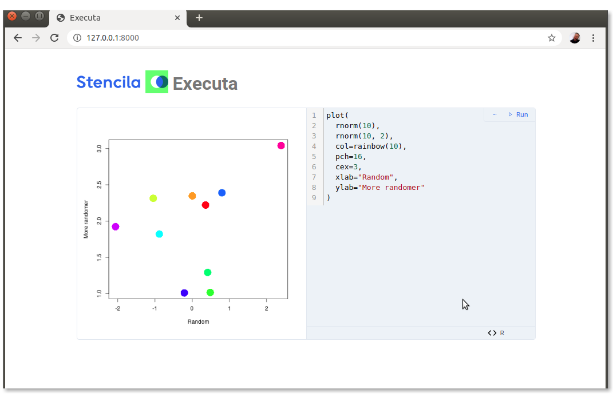

⚡ Executa
Execution engine for executable documents


Install
npm install --global @stencila/executa
Use
All configuration options can be set, in descending order of priority, by:
- a command line argument e.g.
--<value> <value> - an environment variable prefixed with
EXECUTA_e.g.EXECUTA_<option>=<value> - a
.jsonor.iniconfiguration file, set using the--configoption, or.executarcby default
| Name | Description | Type | Validators | Default |
|---|---|---|---|---|
| debug | Display debug log data? | boolean |
false |
|
| stdio | Start a stdio server. |
boolean |
false |
|
| vsock | Start a vsock server.1 |
`boolean | number` | |
| tcp | Start a TCP server.2 | `boolean | string` | pattern: `/^((tcp?://)?([^:/]+)(:(d+))?(/(.+))?) |
| http | Start a HTTP server.3 | `boolean | string` | pattern: `/^((https?://)?([^:/]+)(:(d+))?(/(.+))?) |
| ws | Start a WebSocket server.4 | `boolean | string` | pattern: `/^((wss?://)?([^:/]+)(:(d+))?(/(.+))?) |
| timeout | Duration of inactivity after which the process should stop.5 | number |
0 |
|
| timelimit | Maximum duration for the process.6 | number |
0 |
|
| peers | List of peer addresses.7 | string[] |
["stdio://*"] |
|
| queueLength | Maximum length of the request queue.8 | number |
minimum: 0 |
1000 |
| queueInterval | Interval between attempts to reduce request queue.9 | number |
exclusiveMinimum: 0 |
1 |
| queueStale | Duration after which a request is removed from queue.10 | number |
exclusiveMinimum: 0 |
3600 |
- If a
number, it will be used as the port number. Iftrue, the default Vsock port6000will be used. - If a
string, it will be parsed and used as the address of the TCP server. Iftrue, the default TCP addresstcp://127.0.0.1:7000will be used. - If a
string, it will be parsed and used as the address of the HTTP server. Iftrue, the default HTTP addresshttp://127.0.0.1:8000will be used. - If a
string, it will be parsed and used as the address of the WebSocket server. Iftrue, the default WebSocket addressws://127.0.0.1:9000will be used. - Seconds. Zero means no timeout.
- Seconds. Zero means no time limit.
- Each string in this list is parsed as an address to
a peer executor. e.g.
https://123.45.67.89/,docker://image - When queue reaches this length, subsequent requests will fail with an error response to client.
- Seconds.
- Seconds. Client will be notified when a request is removed.
Develop
Testing with the REPL
There is an interactive REPL that can be used with the both query and execute CLI commands e.g.
npm run cli -- execute --repl --debug
Testing in the browser
Serve Executa over HTTP (to provide static HTML) and WebSocket (to provide JSON RPC):
npm run cli:dev -- serve --http --ws
The
:devsuffix tocliusests-node-devwhich will restart the process when any source files change.
- Visit http://localhost:8000 in your browser and play around with the
<stencila-code-chunk>WebComponent that is connected to the Executa WebSocket that you just started.

Debug inspecting
There is a NPM script, cli:debug, that can be useful for debugging the CLI, for example, from within VSCode (which will auto attach to the Node process), e.g.
npm run cli:debug -- serve --http
The
:debugsuffix toclienables the Node debug inspector so you can use your favorite IDE to attach to the CLI and step through the code.
FAQ
Why is @types/ws a production dependency?
This package has several dependents e.g @stencila/basha. If @types/ws is not installed as a production dependency,
when you try to build dependent packages, you get the error "Cannot find type definition file for 'ws'.". By having it
as a production dependency here, each dependent package does not have to install it as a development dependency.